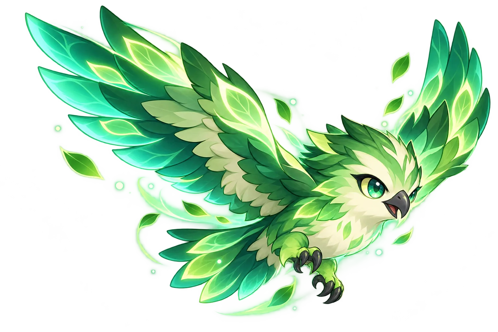
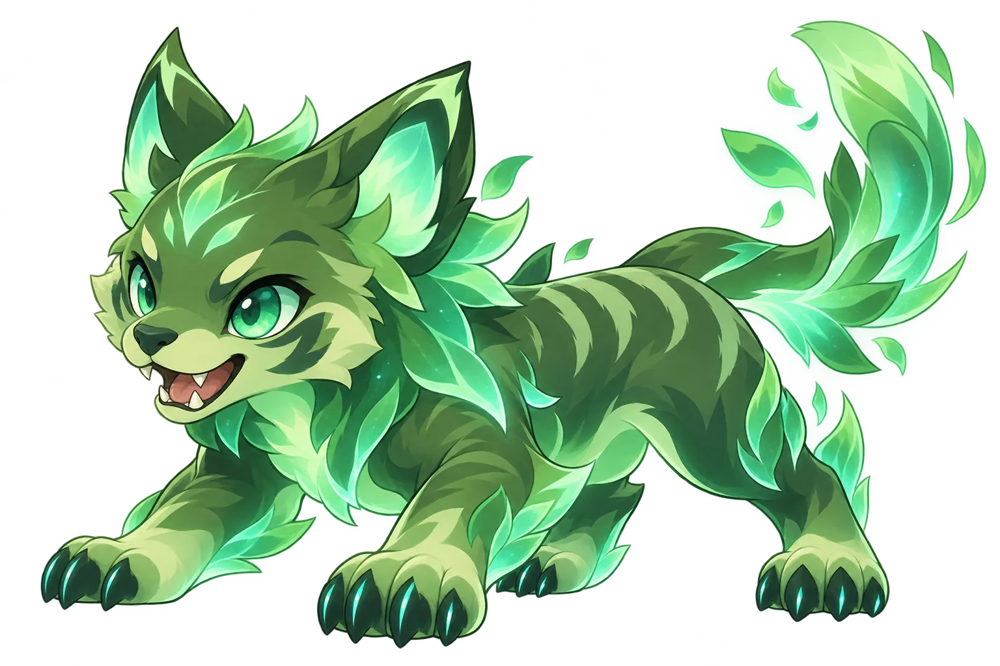

ROUND APOTHECARY / NOW OPEN本局药性检测中
欢迎光临
无畏药铺
秒锁冲点，还是烟里下包？选三位常玩特工，再过十二个回合现场，给你的打法抓一味专属“药”。
VALORANT · ROUND REMEDIES无畏药铺24 味回合药方 · 即取即用
TACTICAL FORMULA // 01
◈ 进点 · 下包 · 回防
OPEN 24 / 7✦ ✦ ✦


斯凯 · 引路鹰斯凯 · 追猎犬 药铺营业中 ● 战术配方待领取
THE ABILITY CABINET / 特工技能陈列
这边请，先看看今日上架
熟悉的技能，被药铺收进了霓虹玻璃柜。
SKYE / E引路鹰闪开，先探路
SKYE / Q追猎犬拐角侦察员
SAGE / E治疗宝珠队友续杯中
OMEN / E黑暗烟幕视线暂时封存
KILLJOY / E自动炮台门口有人值班
RAZE / E彩雷快乐瞬间爆开
SOVA / E侦查箭把问号扫出来
GEKKO / Q皮蛋爆能器专送
STEP 01 / 选三味特工引子
先选你的常玩特工
按常玩程度依次选 3 位。可爱头像已上架，结果主要看后面的 12 道题。
STEP 02 / 回合药性测试
选你真会做的，别替教练答题
皮蛋刚出门，爆能器在路上
ROUND SCENARIO 战术位置
没有标准答案，放心暴露真实打法。
PRESCRIPTION READY / 你的无畏药方
HERB NO./ 24
药方出炉！
01 / 你擅长
02 / 队友会吐槽
你的队内语音
常玩特工只提供战术倾向的起始分；结果主要来自 12 道场景题。
人格结构偏好占比，不是胜率
战术位置
赢回合的习惯
行动节奏
占比只比较你本次选择，不衡量水平、真实战绩或心理学人格。
ROUND REVIEW / 战斗改进站
每局一张经济复盘药笺
打完一局再勾。看看点数、技能、时间和人数优势，花出去有没有换回价值。
0 / 7第 1 局
查看已存档的复盘 0 局
只保存在这台设备的浏览器里，换设备不会同步。最多保留最近 20 局。
HERB CABINET / 24 ROUND REMEDIES
24 味回合药方
四种战术位置 × 三种赢法习惯 × 两种行动节奏。药名是比喻，外号才是队友最熟悉的你。